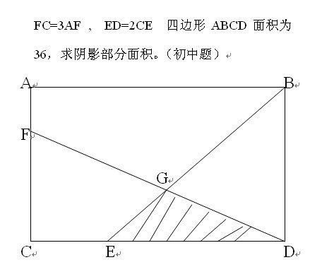
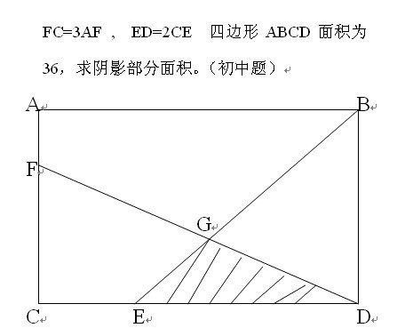

初一奥数题
2009-08-25
求阴影，速度

答案是4.理由，要求阴影部分的面积，而△EBD的面积是易求的（为12），所以只要求出EG与BG的比就可以了。为了求EG/BG，我们连接FE，FB。只需要用一下共边比例定理就OK了：因为EG/BG=S△EFD/S△BFD=1/2所以S△EGD=1/3*S△BED=4
2009-08-25
求阴影，速度

答案是4.理由，要求阴影部分的面积，而△EBD的面积是易求的（为12），所以只要求出EG与BG的比就可以了。为了求EG/BG，我们连接FE，FB。只需要用一下共边比例定理就OK了：因为EG/BG=S△EFD/S△BFD=1/2所以S△EGD=1/3*S△BED=4